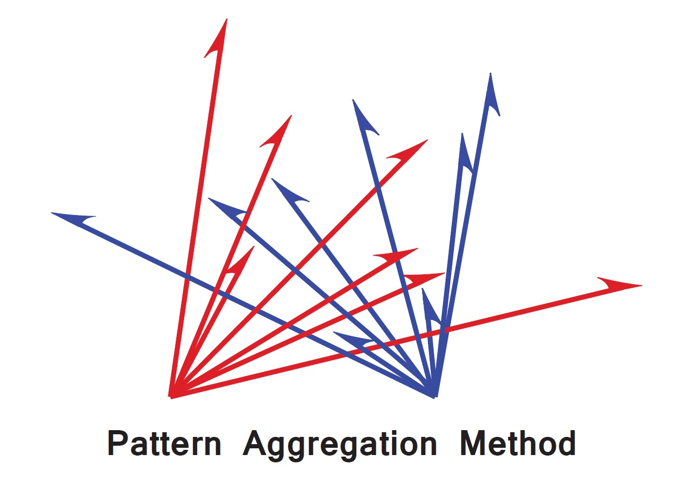

Dr. Benjamin R. Cowley
Post-doc at Princeton University

Code
DCA is a linear dimensionality reduction method that can identify linear and nonlinear relationships between multiple data sets. For example, DCA can identify dimensions of population activity in different brain areas that are related to one another and to stimulus or behavioral variables.
Matlab code: dca.m
Python code: dca.py
Github page: github/dca
I developed a Matlab graphical user interface called DataHigh that allows experimenters to visualize high-dimensional population activity. DataHigh is designed for exploratory data analysis, where the experimenter is interested in forming new hypotheses, building intuition for the data, and validating previous hypotheses. You can check out the DataHigh website by clicking on the logo or here.
DataHigh website
Github page: github/DataHigh

I developed the Pattern Aggregation Method to compare the similarity of subspaces in a high-d space. The idea is that the dimensionality of the subspaces' aggregated basis patterns is bounded based on what we expect if the subspaces were overlapping or orthogonal. Then, we assess how close the aggregated dimensionality is to the lower and upper bounds (overlapping and orthogonal, respectively).
Matlab code: patt_agg.m